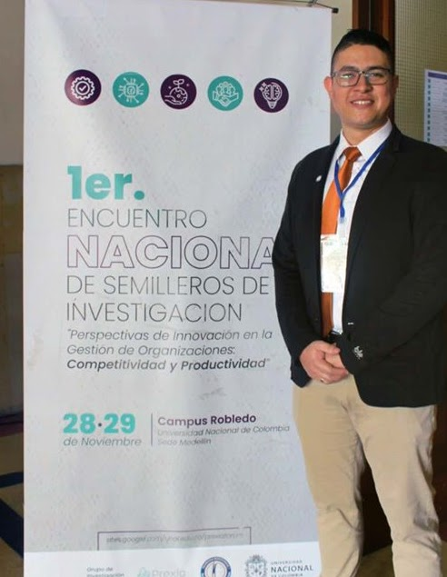
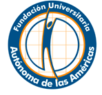

Ponentes y Autores
Presentación de proyectos de investigación en curso o terminados, estudios de caso e iniciativas de emprendimiento ante pares evaluadores nacionales e internacionales.
I Encuentro Nacional de Semilleros de Investigación · «Perspectivas de Innovación en la Gestión de las Organizaciones: Competitividad y Productividad».
El Primer Encuentro Nacional de Semilleros de Investigación reunió en noviembre de 2019 a estudiantes de pregrado de la Universidad Nacional de Colombia, la Fundación Universitaria Autónoma de las Américas y universidades invitadas del país en torno a los métodos de investigación aplicados a la competitividad y gestión de organizaciones.
Se estructuró en dos fases complementarias: una jornada teórica de ponencias magistrales y socialización de avances (propuestas, proyectos en curso e investigaciones terminadas), y una jornada práctica de solución de retos empresariales con premios y candidatura a publicación en el Fondo Editorial.

Tres roles abiertos para semilleristas de pregrado y posgrado, docentes investigadores, evaluadores y comunidad académica.
Presentación de proyectos de investigación en curso o terminados, estudios de caso e iniciativas de emprendimiento ante pares evaluadores nacionales e internacionales.
Dirección de conferencias magistrales, talleres prácticos y comités científicos en las mesas temáticas para retroalimentar el trabajo de los semilleros.
Participación activa en las sesiones plenarias, paneles interinstitucionales, inmersiones académicas Colombia–Brasil y espacios de networking.
Ejes de investigación y líneas de conocimiento habilitadas para la postulación de ponencias en esta edición.
Investigador invitado al Primer Encuentro Nacional de Semilleros de Investigación en torno a capacidades dinámicas, competitividad y modelación organizacional.
Docente investigador en creación de nuevas empresas (New Ventures), ecosistemas de emprendimiento de alto impacto y toma de decisiones estratégicas.
Especialista en automatización, diseño de procesos industriales y adopción tecnológica para la productividad en manufactura y servicios.
Explora las subpáginas específicas de agenda, mesas temáticas, conferencistas y modalidades de participación.
Consulta el detalle completo de galería 2019 correspondiente a esta edición del Encuentro.
Afiches, sesiones académicas y registro visual oficial de la edición (6 recursos).

Fundación Univ. Autónoma de las Américas Grupo Geyma · UNAL Medellín
Grupo Geyma · UNAL Medellín
 Facultad de Ciencias Agrarias · UNAL
Facultad de Ciencias Agrarias · UNAL
 UNESP · São Paulo, Brasil
UNESP · São Paulo, Brasil
 UNESP · Campus Jaboticabal
UNESP · Campus Jaboticabal
 Instituto A Nau Ciranda · Brasil
Instituto A Nau Ciranda · Brasil